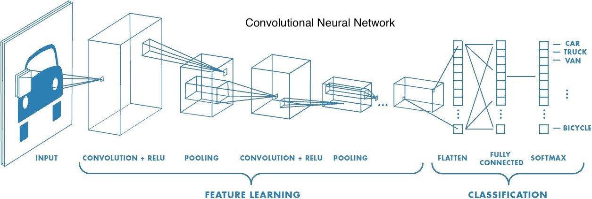
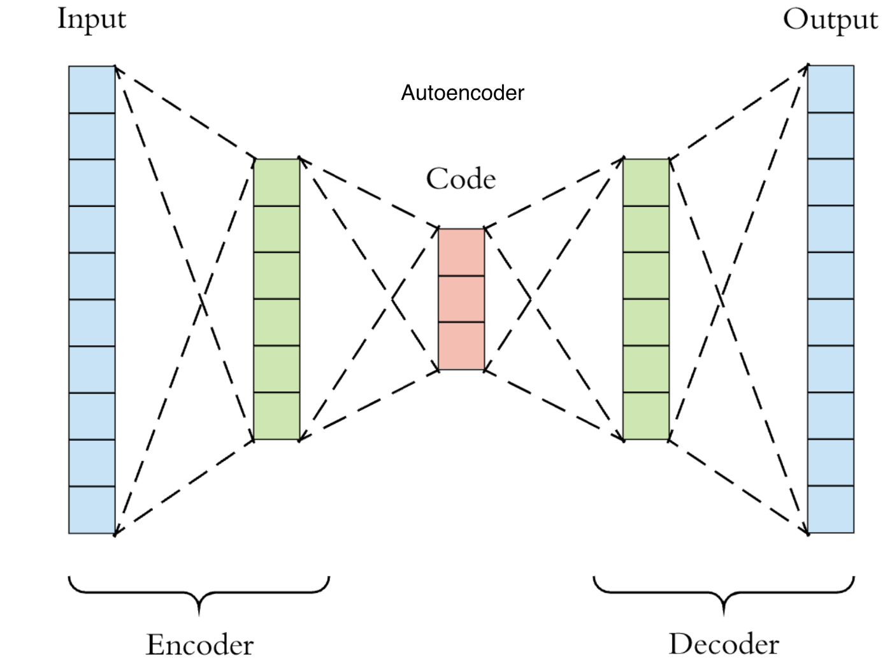
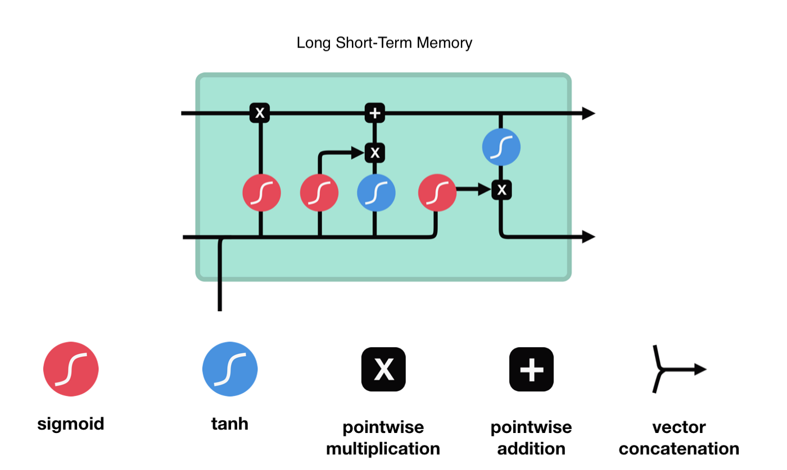
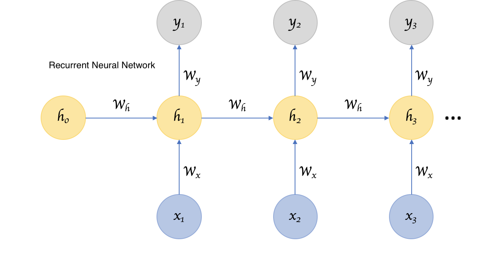
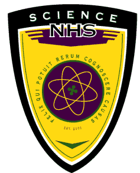
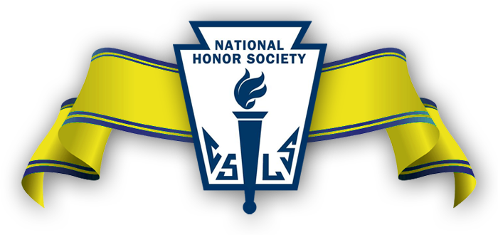
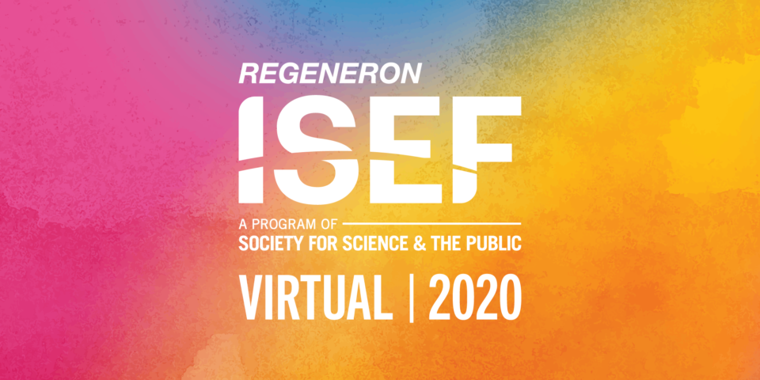
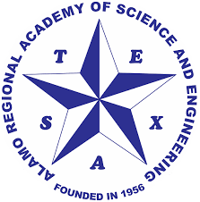
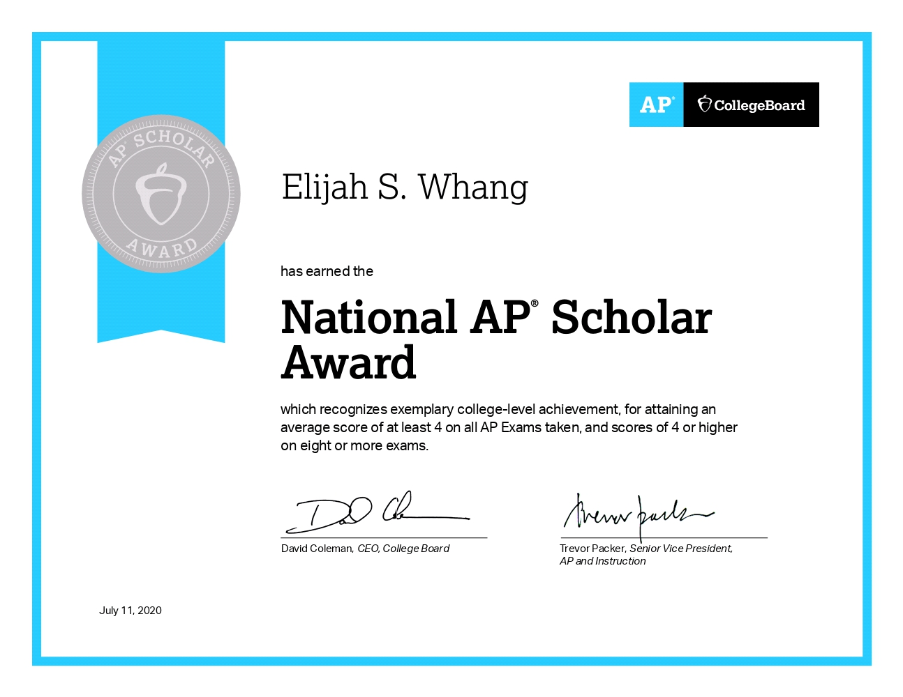
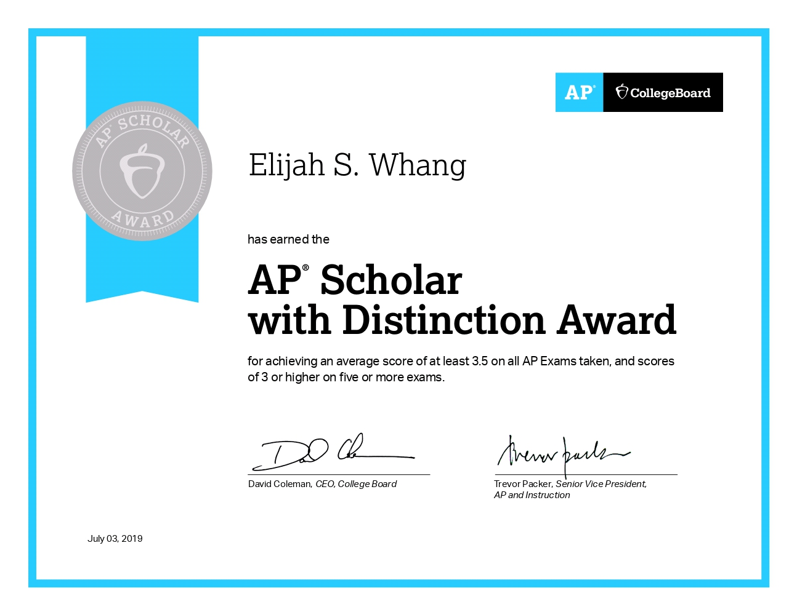

My name is Elijah Whang and I am a junior at BASIS San Antonio - Shavano Campus!
I dream of being a researcher in the intersection of User Interface/User Experience (UI/UX)
and Artificial Intelligence (AI). I have a passion for increasing the accessibility of electronic systems for the disabled and elderly.
Education
GPA: 4.87
ACT Superscore: 36
SAT Math II Subject Test Score: 800
STEM AP/Capstone Classes (12): Calculus AB & BC, Multivariable Calculus, Statistics,
Computer Science A, Computer Science Principles, Physics 1 & 2, Physics C: Mechanics/Electricity & Magnetism,
Modern Physics, Environmental Science
Humanities AP Classes (11): English Literature & Language and Composition, Macro- & Microeconomics,
Psychology, US Government and Politics, World History, US History, Latin, Human Geography, European History
Languages, Frameworks & Platforms:
Deep Learning & Science Programs/Libraries:




Leadership

Inaugural President of the Sciene National Honor Society: It is an honor society for students that are advanced and interested in science. Students take time to learn more about science as a society through activities like presentations.
Vice President of Mu Alpha Theta: Led meetings and planned events.
Captain of the Varsity Basketball Team: Led the team by directing players and calling plays since sophomore year.

Historian of the National Honor Society: Help plan and organize meetings and events. Responsible for taking pictures and advertising group events.
Honors & Awards

Regeneron International Science and Engineering Fair Finalist: Tracking Red Blood Cells in Real Time with Deep Learning

Alamo Regional Science and Engineering Fair Senior Division 2nd Grand Prize: Tracking Red Blood Cells in Real Time with Deep Learning to Predict Mortality
Keynote Speaker: Alamo Regional Science and Engineering Fair
Alamo Regional Science and Engineering Fair 1st Place Computer Science and Math: Tracking Red Blood Cells in Real Time with Deep Learning to Predict Motality
2nd Grand Prize, Individual Project Winner: Schreiner University Scholarship
St. Mary's University Scholarship
Trinity University Scholarship

National AP Scholar

AP Scholar with Distinction
Defensive Player of the Year: BASIS Shavano Varsity Basketball
Summer Camp Participant with Full Scholarship: Texas Governor's Science and Technology Champions Academy